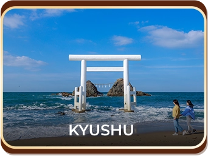
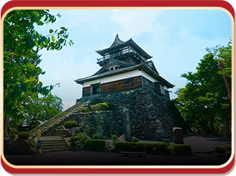
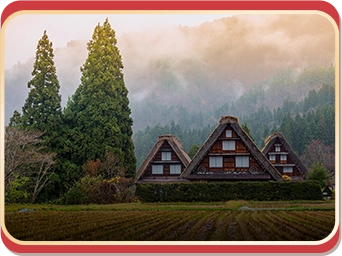

Khám phá các vùng của Nhật Bản
Vui lòng truy cập vào từng vùng để tìm hiểu thông tin
và trả lời các câu hỏi tương ứng


CHUBU (Hokuriku Shinetsu)
CHUBU (Tokai)Vui lòng truy cập vào từng vùng để tìm hiểu thông tin
và trả lời các câu hỏi tương ứng


CHUBU (Hokuriku Shinetsu)
CHUBU (Tokai)